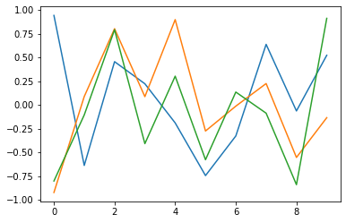

Keras を使えば LSTM は簡単に構築できます。
構築例を次のソース1に示します。
import tensorflow as tf
from tensorflow.keras.models import Sequential
from tensorflow.keras.layers import Dense,LSTM
import numpy as np
import matplotlib.pyplot as plt
# パーセプトロン/LSTMブロックの数
N = 3 # 入力層
K = 2 # 隠れ層
M = 1 # 出力層
# 信号長
L = 10
# 入力信号
x = np.random.uniform(low=-1, high=1, size=L*N)
data = x.reshape(1,L,N)
# LSTMの構築
model = Sequential()
model.add( LSTM( K, batch_input_shape=(None,L,N), return_sequences=False))
model.add( Dense(M, activation='linear') )
# 出力
y = model.predict(data)
# モデルの概要表示
model.summary()
print('入力')
plt.plot(range(L),data[0])
plt.show()
print('\n出力')
print(y)
では各行の意味について順を追って説明していきたいと思います。
# パーセプトロン/LSTMブロックの数 N = 3 # 入力層 K = 2 # 隠れ層 M = 1 # 出力層 # 信号長 L = 10
で LSTM のユニット数や入力信号の長さを設定しています。
# 入力信号 x = np.random.uniform(low=-1, high=1, size=L*N) data = x.reshape(1,L,N)
の部分では入力信号を作成しています。
今回は -1〜1 の範囲の一様乱数を L*N(= 30) 個生成し、reshape関数を使って長さ L(=10) の信号を N(=3)個作りました。
ちなみに reshapeのカッコ内の先頭の数字 1 はデータセット数が1個という意味です。
この様にして作った入力信号の例を図1に示します(※ 乱数なので実行するたびにグラフの形は変わります)。

次に LSTMを構築して値を出力します。
# LSTMの構築 model = Sequential() model.add( LSTM( K, batch_input_shape=(None,L,N), return_sequences=False)) model.add( Dense(M, activation='linear') ) # 出力 y = model.predict(data)
3行目で LSTMブロック のインスタンスをネットワークに追加していますが、return_sequences は LSTM の出力を全時刻において出力するか、最後の時刻の値だけを出力するかを決めるパラメータです(デフォルトは False)
今回は return_sequences=False としていますので、最後の時刻の値だけを出力しています(図2)。
※ 入力が乱数なので実行するたびに値は変わります。
[[-0.05493683]]
仮に return_sequences=True とすると全時刻(i=0,1,・・・,9)においてLSTMから出力がされます(図3)
※ 入力が乱数なので実行するたびに値は変わります。
[[[ 0.02156563] [ 0.1430859 ] [ 0.04868509] [-0.04080052] [-0.05400606] [-0.0736019 ] [ 0.03886629] [ 0.12875266] [ 0.11176284] [ 0.06541518]]]
また4行目では全結合層(Dense)のインスタンスを追加していますが、今回は演習において入力信号の推定問題を扱おうと思っているので、活性化関数としてこれまで使ってきた「softmax」ではなく「linear」(線形出力)を使っています。
※ もちろん普通に「softmax」を使うことも可能です。
さて、この様にして作成したモデルの概要は次の図4となります。
Model: "sequential_14" _________________________________________________________________ Layer (type) Output Shape Param # ================================================================= lstm_14 (LSTM) (None, 10, 2) 48 _________________________________________________________________ dense_3 (Dense) (None, 10, 1) 3 ================================================================= Total params: 51 Trainable params: 51 Non-trainable params: 0
こごて 1 つの LSTM ブロックへの入力は入力信号が x3、フィードバック入力が x2 の 5 つなので、LSTM ブロックの入力部のパラメータ数は 6 個(重みx5、バイアスx1)になります。
同様に入力・忘却・出力ゲートのパラメータ数もそれぞれ 6 個なので、LSTMブロック 1 つのパラメータ数は 4*6 = 24 個となります。
従ってソース1のLSTMにはブロックが K=2 つ含まれてますので、合計 24*2 = 48 個のパラメータ数となっています。